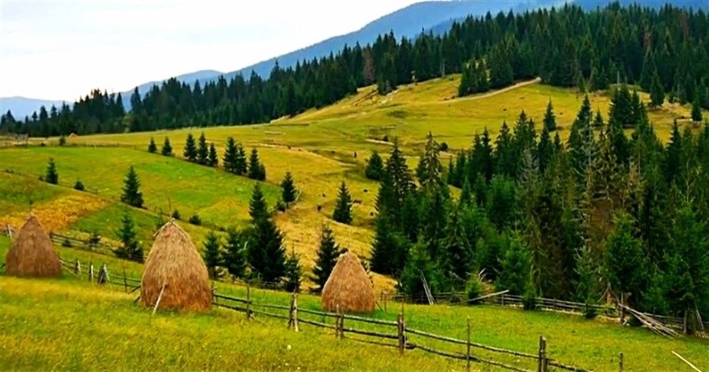
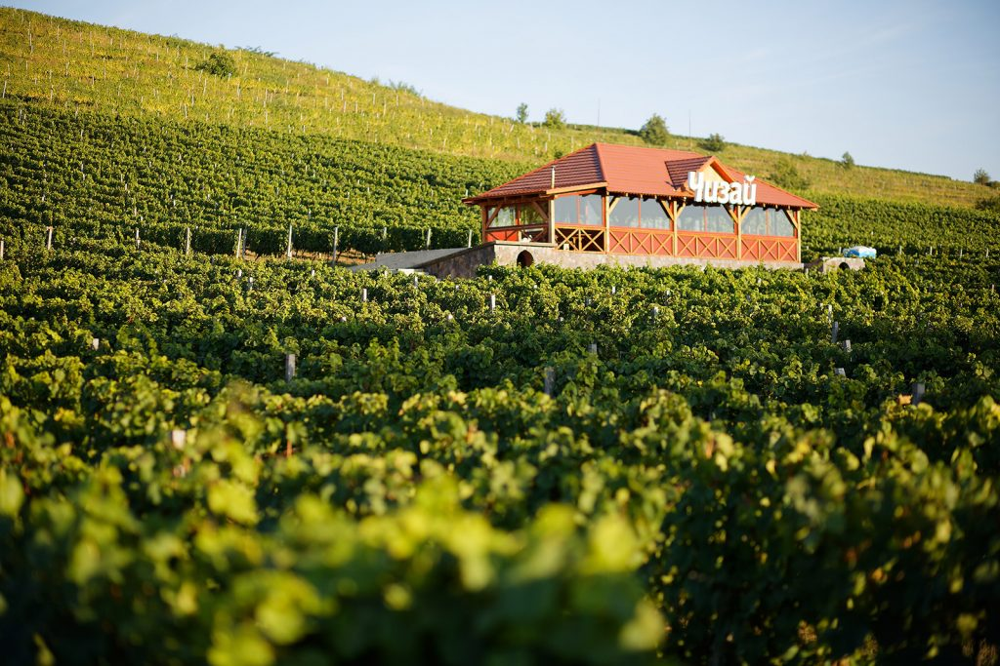

Географічне положення і природа
Закарпаття охоплює частину Карпатських гір та Закарпатської низовини. Це регіон, відомий своєю
мальовничою природою:
величні гори, густі ліси, чисті річки, озера та термальні джерела. Тут розташовані такі природні
перлини, як
національний парк «Синевир», озеро Синевир – одне з найглибших і найчистіших озер України, та знамените
термальне озеро
Косино.
Клімат регіону варіюється від помірно-континентального до гірського, що робить Закарпаття привабливим як для зимового, так і для літнього туризму. Курорти Шаян та Поляна відомі своїми мінеральними водами, а лижні комплекси Драгобрат та Буковель є популярними взимку
.
Історія та культура
Закарпаття має багату історію, яка віддзеркалює його розташування на перехресті різних культур і
держав.
Територія
сучасного Закарпаття колись входила до складу Великого князівства Литовського, Угорського королівства,
Австро-Угорської
імперії та Чехословаччини. Ця багатовікова історія залишила сліди у вигляді архітектури, культури та
мовного розмаїття.
Культурне багатство Закарпаття проявляється у його багатонаціональному складі. Тут живуть українці,
угорці, словаки,
румуни, романи, що разом створюють унікальний колорит цього краю. Змішання мов, традицій, релігій
(православ’я,
католицизм, греко-католицизм) дає можливість побачити Закарпаття як справжній культурний мікрокосм.
Туризм і визначні місця
Закарпаття відоме своїми численними туристичними пам'ятками, які приваблюють туристів з усієї України та
з-за кордону.
Серед найпопулярніших місць можна виділити:
Замок Паланок у Мукачеві – середньовічна фортеця, яка вражає своєю архітектурою та панорамними
видами.
Ужгородський замок – один з найстаріших замків України, який має глибоке історичне коріння.
Церкви Закарпаття – унікальні дерев'яні церкви, що належать до світової спадщини ЮНЕСКО, є
безцінними
архітектурними
пам'ятками.
Термальні джерела в Берегові та Косині – місця для оздоровлення та відпочинку.
Долина нарцисів – природний заповідник, де навесні розквітають тисячі нарцисів.
Економіка і виноробство
Закарпаття також відоме виноробними традиціями. Завдяки сприятливому клімату, регіон є ідеальним для
вирощування винограду.
Закарпатські вина славляться як в Україні, так і за її межами. Винні фестивалі, як-от
фестиваль у Берегові,
збирають гурманів з різних країн.
Економіка регіону в основному базується на сільському господарстві,
туризмі, лісовому господарстві та
легкій
промисловості. Останніми роками активно розвиваються туристичний бізнес та екологічний туризм.
